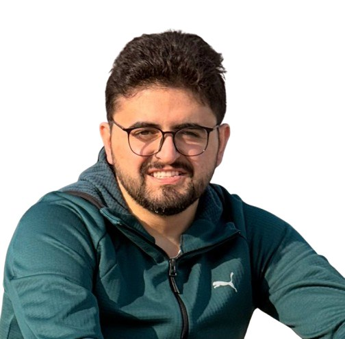

CV
Zaid Rustamov
Süni intellekt mühəndisi və tədqiqatçı
Zaid Rustamov MegaSec AI Laboratoriyasında Süni İntellekt mühəndisi və ADA Üniversitetinin nəznində olan Data Analitikası və Təqdiqat Mərkəzində təqdiqatçı kimi fəaliyyət göstərir.
O, hüquqi, ictimai və data əsaslı sahələrdə qabaqcıl AI sistemlərinin dizaynı və tətbiqi üzərində çalışır. Onun ixtisas sahələri Təbii Dilin Emalı, Böyük Dil Modelləri, və Generativ Sİ-dir. Əsas fokus sahəsi isə skalyasiya olunan, production-grade sistemlər və end-to-end AI pipeline-larının qurulmasıdır.
